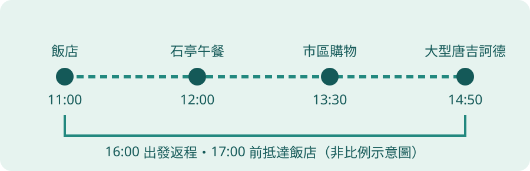

A5石垣牛御膳
¥5,900／人，可選壽喜燒或涮涮鍋，附蔬菜、茶碗蒸、白飯。
8位大人＋1位嬰兒 · 私人包車 · 17:00 前返回 Club Med
 照片來源：日本政府觀光局
照片來源：日本政府觀光局
收費地點：抵達 Club Med 飯店後
| 包車（9位） | ¥56,200 |
| 停車費（¥500／小時 × 6小時，預估） | ¥3,000 |
| 合計 | ¥59,200 |
| 每人約（9份分攤） | ¥6,578 |
| 每人預收 | ¥6,600 |
共預收 ¥59,400，預估餘額 ¥200；實際車費及停車費結算後多退少補。午餐與購物另計。
行程原則：不趕景點，專注石垣牛午餐與市區購物。以下皆為日本時間（台灣時間＋1小時）。午餐餐廳已選定；實際訂位與包車以確認為準。
上午｜虎航抵達 → Club Med 接駁車 → 飯店寄放行李；抵達飯店後收取車資日幣 ¥6,600／人。
11:30–12:20｜飯店出發，包車前往石垣市區。
12:30–13:30｜滿天阿古豬・石亭 Sekitei 石垣牛壽喜燒／涮涮鍋。
13:30–14:30｜Euglena Mall 商店街、公設市場、大國藥妝，自由購物及甜點。
14:30–14:50｜集合上車，前往大型唐吉訶德石垣島店。
14:50–16:00｜大型唐吉訶德購物，預留70分鐘。
16:00–16:50｜返回 Club Med，17:00前抵達；視交通提前出發。
若接駁或午餐延誤，彈性縮短購物時間，17:00 前返抵飯店優先。
已選定餐廳｜12/1 12:30–13:30（日本時間，實際訂位時間以確認單為準），8位大人＋1位嬰兒。
農場直營的日式鍋物餐廳，提供A5石垣牛壽喜燒或涮涮鍋及純種阿古豬。地址：沖繩縣石垣市美崎町1-3。午餐參考營業時間11:00–14:30。
¥5,900／人，可選壽喜燒或涮涮鍋，附蔬菜、茶碗蒸、白飯。
¥3,400／人，附蔬菜、茶碗蒸、白飯。
八位成人全點石垣牛御膳預估 ¥47,200，實際餐點以當日菜單為準。
官方午餐菜單與餐點照片 ↗ TableCheck 訂位資訊 ↗ 餐廳 Google Maps ↗
電話：+81 50-1784-0930。確認九人座位、嬰兒椅或推車空間。
Euglena Mall 商店街＋石垣市公設市場：有遮棚的商店街，集中當地食品、工藝、紀念品及市場小吃。 ↗
大國藥妝 石垣730紀念碑前店：藥妝、保養品、日用品；參考營業時間10:05–21:50，免稅資格及當日時間以門市為準。 ↗
Hau Tree Gelato｜熱帶水果冰淇淋，推薦鳳梨、百香果。 ↗
A&W 石垣店｜捲捲薯條、Root Beer 麥根沙士。 ↗
公設市場：金城製麵（八重山麵）、鮪魚及海鮮、島豬香腸等。小店營業與售完情況以現場為準。 ↗
地方限定食品：邊銀食堂石垣島辣油、石垣之鹽、ROYCE’ 石垣島限定黑糖／鹽味巧克力、八重山群島黑糖、島胡椒 Piparts、紅芋塔、金楚糕。
特色生活選物：琉球玻璃杯、石垣島 Genki 乳業周邊、島嶼風格手作小物。
藥妝採買：防曬、保濕、面膜、日常護理用品；藥品依個人需求及成分選購。免稅請攜帶護照，並確認食品及藥品入境限制；肉類及含肉加工品勿帶回台灣。
建議分流：13:30–14:00 公設市場與伴手禮；14:00–14:25 大國藥妝或甜點；14:30 集合上車。
14:50–16:00｜約70分鐘，安排大型分店，不前往市中心伴手禮小店。推薦採買藥妝、保養品、零食、生活用品與伴手禮。請預留結帳及免稅時間，16:00 集合返程。
8位大人＋1位嬰兒，共9位乘客；包車 11:30–17:00。確認嬰兒安全座椅及座位空間。
車費與停車費合計預估 ¥59,200，九份均分約 ¥6,578，每人預收 ¥6,600 日幣，多退少補。抵達 Club Med 後收費。
八位成人若全點 A5 石垣牛御膳，午餐預估 ¥47,200。車費及午餐合計預估 ¥106,400，不含其他餐飲及購物。午餐費不包含在車資預收內。
直接看商品外觀，方便現場辨認；包裝上的原始日文保留，說明均為繁體中文。